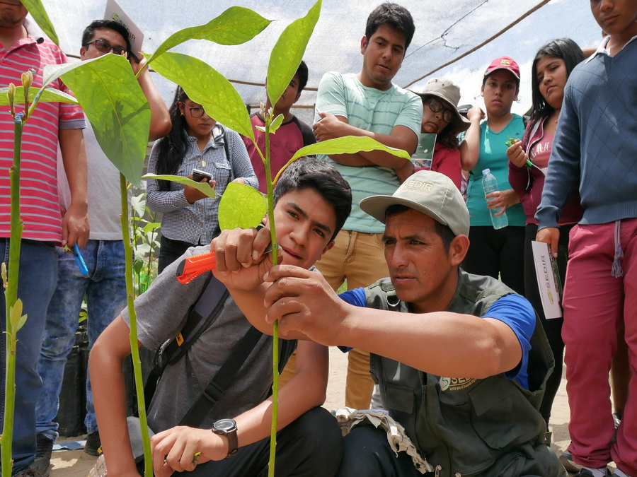
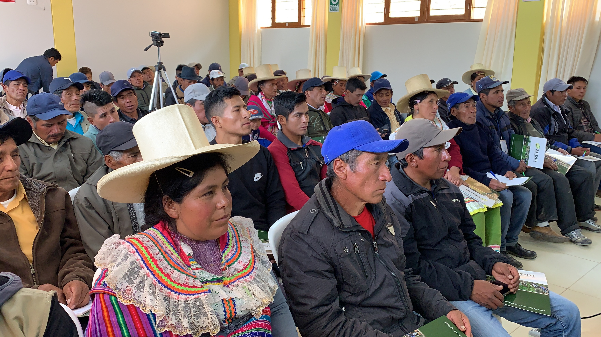

4,710
Agricultores y emprendedores(as) dedicados a la crianza

Sembramos
oportunidades, transformamos
vidas


Proyecto de Cooperación:
Proyecto en la modalidad de cofinanciamiento por el Servicio de Liechtenstein
para el Desarrollo (LED) y SEDIR. Fue ejecutada en el distrito de Moro en el
periodo 2013 – 2018.
GRUPO OBJETIVO
1,872 Agricultores
Fortalecer la estructura organizacional y operativa del equipo de Extensión Agraria.
Garantizar a los agricultores del valle Nepeña un servicio de asistencia técnica basado en el uso adecuado y responsable de tecnologías, incluso rescatando tecnologías locales.
Consolidar el desarrollo de capacidades a nivel de productores y técnicos agropecuarios a fin de garantizar la disponibilidad de recursos humanos locales, generando de esta manera oportunidades de desarrollo independiente y autoempleo en el valle Nepeña.
Incrementar la eficiencia productiva y optimizar costos a través de la mejora de la tecnología de procesos.
Mejorar los estándares de la producción agrícola mediante la asistencia técnica.
Fortalecer la marca MORO, así mismo mejorar la participación de mercado mediante la aplicación de estrategias adecuadas de ventas y distribución.
Proyecto en la modalidad de cofinanciamiento por el Servicio de Liechtenstein para el Desarrollo (LED) y SEDIR. Fue ejecutada en el distrito de Moro en el periodo 2019 – 2024.
Un proyecto enfocado en la diversificación y el fortalecimiento de capacidades productivas en el Distrito de Moro y la Subcuenca del Río Loco.
Pequeños productores agropecuarios del Distrito de Moro y la Subcuenca del Río Loco, diversifican y aplican nuevas tecnologías de producción agroecológica y comercialización de productos.
Pequeños productores agropecuarios de la Subcuenca del Río Loco, implementan la asociatividad como mecanismo para acceder a nuevos mercados.
Mujeres y jóvenes pertenecientes a la Subcuenca del Río Loco, se integran a la actividad productiva en crianza de animales menores y producción agroecológica.


Impacto de la cooperación LED – SEDIR durante el periodo 2013 – 2024.
4,710
Agricultores y emprendedores(as) dedicados a la crianza
665
Emprendedores en formación especializada de cultivos y crianzas
Distribución
| Programa | Ámbito / Distrito | Beneficiarios |
|---|---|---|
| Capacitación a agricultores | Moro / Moro | 3,022 |
| Río Loco / Pamparomás | 1,146 | |
| Capacitación a Mujeres – Actividad Productiva | Río Loco / Pamparomás | 542 |
| Programa de Formación Agropecuaria – PFA | Moro / Moro | 419 |
| Río Loco / Pamparomás | 246 |